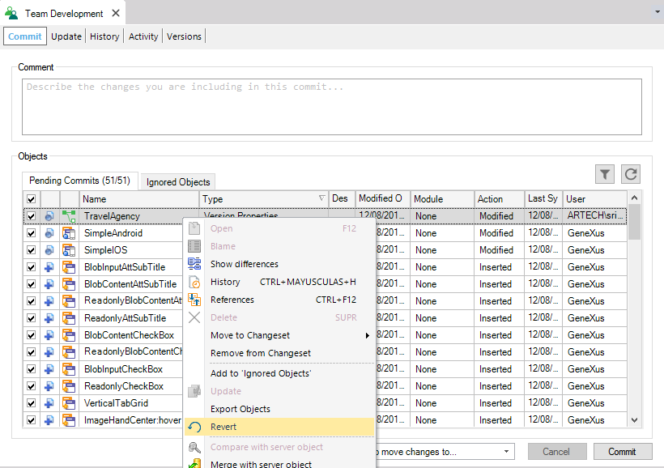

The Revert option allows the Developer to get rid of those changes which aren't yet committed and to reset the object to the way it was before the edition. The operation discards the changes and reverts to the committed revision the Developer started with (the revision which corresponds to the last Commit or Update operation performed from the client that includes the object; Update with Merge are not considered). 
|